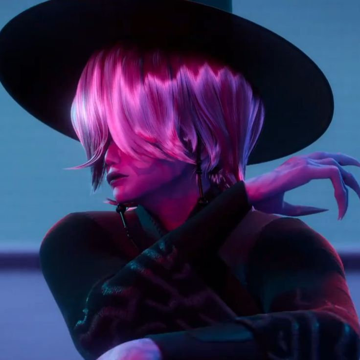

Mystery is a member of Saja Boys and one of Gwi-Ma's demonic servants. Like the other members of the group, he helps carry out Gwi-Ma's plan to weaken the Honmoon and collect human souls through the group's growing popularity.
Among all members of Saja Boys, Mystery is the most enigmatic. His face is completely hidden behind his long bangs, and throughout the story viewers never see what he truly looks like. This deliberate secrecy has made him one of the most mysterious members of the group.